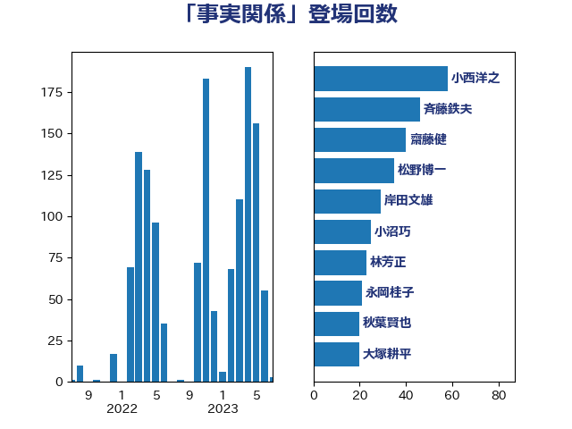

単語「事実関係」

| 小西洋之 | 立憲民主党 | 58 回 |
| 斉藤鉄夫 | 公明党 | 46 回 |
| 齋藤健 | 自由民主党 | 40 回 |
| 松野博一 | 自由民主党 | 35 回 |
| 岸田文雄 | 自由民主党 | 29 回 |
| 小沼巧 | 立憲民主党 | 25 回 |
| 林芳正 | 自由民主党 | 23 回 |
| 永岡桂子 | 自由民主党 | 21 回 |
| 秋葉賢也 | 自由民主党 | 20 回 |
| 大塚耕平 | 国民民主党 | 20 回 |
| 加藤勝信 | 自由民主党 | 16 回 |
| 音喜多駿 | 日本維新の会 | 15 回 |
| 藤岡隆雄 | 立憲民主党 | 15 回 |
| 古川禎久 | 自由民主党 | 15 回 |
| 鈴木俊一 | 自由民主党 | 14 回 |
| 葉梨康弘 | 自由民主党 | 14 回 |
| 鎌田さゆり | 立憲民主党 | 13 回 |
| 福山哲郎 | 立憲民主党 | 13 回 |
| 西村康稔 | 自由民主党 | 12 回 |
| 階猛 | 立憲民主党 | 11 回 |
| 秋本真利 | 無所属 | 11 回 |
| 簗和生 | 自由民主党 | 10 回 |
| 本庄知史 | 立憲民主党 | 10 回 |
| 寺田稔 | 自由民主党 | 10 回 |
| 鈴木貴子 | 自由民主党 | 9 回 |
| 金子恭之 | 自由民主党 | 9 回 |
| 穀田恵二 | 日本共産党 | 9 回 |
| 牧山ひろえ | 立憲民主党 | 9 回 |
| 米山隆一 | 立憲民主党 | 8 回 |
| 浜田靖一 | 自由民主党 | 8 回 |
| 森本真治 | 立憲民主党 | 8 回 |
| 柚木道義 | 立憲民主党 | 8 回 |
| 松原仁 | 立憲民主党 | 8 回 |
| 末松信介 | 自由民主党 | 8 回 |
| 城井崇 | 立憲民主党 | 8 回 |
| 萩生田光一 | 自由民主党 | 7 回 |
| 加田裕之 | 自由民主党 | 7 回 |
| 谷公一 | 自由民主党 | 6 回 |
| 西村智奈美 | 立憲民主党 | 6 回 |
| 浅野哲 | 国民民主党 | 6 回 |
| 松本剛明 | 自由民主党 | 6 回 |
| 杉尾秀哉 | 立憲民主党 | 6 回 |
| 川合孝典 | 国民民主党 | 6 回 |
| 塩川鉄也 | 日本共産党 | 6 回 |
| 伊佐進一 | 公明党 | 6 回 |
| 青柳仁士 | 日本維新の会 | 5 回 |
| 榛葉賀津也 | 国民民主党 | 5 回 |
| 徳永久志 | 無所属 | 5 回 |
| 岡本あき子 | 立憲民主党 | 5 回 |
| 山田勝彦 | 立憲民主党 | 5 回 |
| 山岸一生 | 立憲民主党 | 5 回 |
| 上田清司 | 国民民主党 | 5 回 |
| 鈴木宗男 | 日本維新の会 | 4 回 |
| 赤嶺政賢 | 日本共産党 | 4 回 |
| 谷合正明 | 公明党 | 4 回 |
| 若宮健嗣 | 自由民主党 | 4 回 |
| 神谷裕 | 立憲民主党 | 4 回 |
| 石垣のりこ | 立憲民主党 | 4 回 |
| 田島麻衣子 | 立憲民主党 | 4 回 |
| 水野素子 | 立憲民主党 | 4 回 |
| 根本匠 | 自由民主党 | 4 回 |
| 柳ヶ瀬裕文 | 日本維新の会 | 4 回 |
| 川田龍平 | 立憲民主党 | 4 回 |
| 山田賢司 | 自由民主党 | 4 回 |
| 山添拓 | 日本共産党 | 4 回 |
| 奥野総一郎 | 立憲民主党 | 4 回 |
| 北側一雄 | 公明党 | 4 回 |
| 伊藤俊輔 | 立憲民主党 | 4 回 |
| 井野俊郎 | 自由民主党 | 4 回 |
| 丸川珠代 | 自由民主党 | 4 回 |
| 高橋千鶴子 | 日本共産党 | 3 回 |
| 青山大人 | 立憲民主党 | 3 回 |
| 重徳和彦 | 立憲民主党 | 3 回 |
| 赤澤亮正 | 自由民主党 | 3 回 |
| 谷田川元 | 立憲民主党 | 3 回 |
| 西村明宏 | 自由民主党 | 3 回 |
| 芳賀道也 | 国民民主党 | 3 回 |
| 舟山康江 | 国民民主党 | 3 回 |
| 稲富修二 | 立憲民主党 | 3 回 |
| 田村まみ | 国民民主党 | 3 回 |
| 田中健 | 国民民主党 | 3 回 |
| 源馬謙太郎 | 立憲民主党 | 3 回 |
| 浜田聡 | NHK党 | 3 回 |
| 河野太郎 | 自由民主党 | 3 回 |
| 梅谷守 | 立憲民主党 | 3 回 |
| 梅村聡 | 日本維新の会 | 3 回 |
| 後藤祐一 | 立憲民主党 | 3 回 |
| 岩谷良平 | 日本維新の会 | 3 回 |
| 岩渕友 | 日本共産党 | 3 回 |
| 岡田直樹 | 自由民主党 | 3 回 |
| 山岡達丸 | 立憲民主党 | 3 回 |
| 山下貴司 | 自由民主党 | 3 回 |
| 小林鷹之 | 自由民主党 | 3 回 |
| 北神圭朗 | 無所属 | 3 回 |
| 前川清成 | 日本維新の会 | 3 回 |
| 仁比聡平 | 日本共産党 | 3 回 |
| 井上哲士 | 日本共産党 | 3 回 |
| 中西祐介 | 自由民主党 | 3 回 |
| 三谷英弘 | 自由民主党 | 3 回 |
| 高橋光男 | 公明党 | 2 回 |
| 馬淵澄夫 | 立憲民主党 | 2 回 |
| 長浜博行 | 無所属 | 2 回 |
| 鈴木敦 | 国民民主党 | 2 回 |
| 足立康史 | 日本維新の会 | 2 回 |
| 笠井亮 | 日本共産党 | 2 回 |
| 石橋通宏 | 立憲民主党 | 2 回 |
| 石川大我 | 立憲民主党 | 2 回 |
| 田村智子 | 日本共産党 | 2 回 |
| 浜口誠 | 国民民主党 | 2 回 |
| 沢田良 | 日本維新の会 | 2 回 |
| 武井俊輔 | 自由民主党 | 2 回 |
| 杉本和巳 | 日本維新の会 | 2 回 |
| 新垣邦男 | 立憲民主党 | 2 回 |
| 後藤茂之 | 自由民主党 | 2 回 |
| 山本太郎 | れいわ新選組 | 2 回 |
| 山本剛正 | 日本維新の会 | 2 回 |
| 小川淳也 | 立憲民主党 | 2 回 |
| 寺田学 | 立憲民主党 | 2 回 |
| 宮本岳志 | 日本共産党 | 2 回 |
| 塩村あやか | 立憲民主党 | 2 回 |
| 坂本祐之輔 | 立憲民主党 | 2 回 |
| 吉良よし子 | 日本共産党 | 2 回 |
| 古川元久 | 国民民主党 | 2 回 |
| 勝部賢志 | 立憲民主党 | 2 回 |
| 勝目康 | 自由民主党 | 2 回 |
| 伊東信久 | 日本維新の会 | 2 回 |
| 井出庸生 | 自由民主党 | 2 回 |
| 串田誠一 | 日本維新の会 | 2 回 |
| 鬼木誠 | 立憲民主党 | 1 回 |
| 高橋はるみ | 自由民主党 | 1 回 |
| 門山宏哲 | 自由民主党 | 1 回 |
| 長峯誠 | 自由民主党 | 1 回 |
| 長友慎治 | 国民民主党 | 1 回 |
| 鈴木英敬 | 自由民主党 | 1 回 |
| 鈴木義弘 | 国民民主党 | 1 回 |
| 金子道仁 | 日本維新の会 | 1 回 |
| 野間健 | 立憲民主党 | 1 回 |
| 道下大樹 | 立憲民主党 | 1 回 |
| 辻元清美 | 立憲民主党 | 1 回 |
| 西田昭二 | 自由民主党 | 1 回 |
| 西田昌司 | 自由民主党 | 1 回 |
| 西岡秀子 | 国民民主党 | 1 回 |
| 藤川政人 | 自由民主党 | 1 回 |
| 菅直人 | 立憲民主党 | 1 回 |
| 茂木敏充 | 自由民主党 | 1 回 |
| 羽田次郎 | 立憲民主党 | 1 回 |
| 羽生田俊 | 自由民主党 | 1 回 |
| 細田健一 | 自由民主党 | 1 回 |
| 福島伸享 | 無所属 | 1 回 |
| 神谷宗幣 | 参政党 | 1 回 |
| 石橋林太郎 | 自由民主党 | 1 回 |
| 石井苗子 | 日本維新の会 | 1 回 |
| 石井準一 | 自由民主党 | 1 回 |
| 石井浩郎 | 自由民主党 | 1 回 |
| 畦元将吾 | 自由民主党 | 1 回 |
| 田野瀬太道 | 無所属 | 1 回 |
| 田村憲久 | 自由民主党 | 1 回 |
| 田名部匡代 | 立憲民主党 | 1 回 |
| 牧義夫 | 立憲民主党 | 1 回 |
| 渡辺周 | 立憲民主党 | 1 回 |
| 渡辺博道 | 自由民主党 | 1 回 |
| 浅川義治 | 日本維新の会 | 1 回 |
| 津島淳 | 自由民主党 | 1 回 |
| 河西宏一 | 公明党 | 1 回 |
| 梅村みずほ | 日本維新の会 | 1 回 |
| 本田顕子 | 自由民主党 | 1 回 |
| 本村伸子 | 日本共産党 | 1 回 |
| 庄子賢一 | 公明党 | 1 回 |
| 平木大作 | 公明党 | 1 回 |
| 平山佐知子 | 無所属 | 1 回 |
| 岩本剛人 | 自由民主党 | 1 回 |
| 岡田克也 | 立憲民主党 | 1 回 |
| 山際大志郎 | 自由民主党 | 1 回 |
| 山田太郎 | 自由民主党 | 1 回 |
| 山崎正恭 | 公明党 | 1 回 |
| 山井和則 | 立憲民主党 | 1 回 |
| 山下芳生 | 日本共産党 | 1 回 |
| 尾身朝子 | 自由民主党 | 1 回 |
| 小野田紀美 | 自由民主党 | 1 回 |
| 小熊慎司 | 立憲民主党 | 1 回 |
| 小沢雅仁 | 立憲民主党 | 1 回 |
| 小倉將信 | 自由民主党 | 1 回 |
| 安江伸夫 | 公明党 | 1 回 |
| 守島正 | 日本維新の会 | 1 回 |
| 大家敏志 | 自由民主党 | 1 回 |
| 大塚拓 | 自由民主党 | 1 回 |
| 大串博志 | 立憲民主党 | 1 回 |
| 塩崎彰久 | 自由民主党 | 1 回 |
| 堀場幸子 | 日本維新の会 | 1 回 |
| 城内実 | 自由民主党 | 1 回 |
| 嘉田由紀子 | 無所属 | 1 回 |
| 吉田はるみ | 立憲民主党 | 1 回 |
| 吉川沙織 | 立憲民主党 | 1 回 |
| 古賀之士 | 立憲民主党 | 1 回 |
| 古川康 | 自由民主党 | 1 回 |
| 原口一博 | 立憲民主党 | 1 回 |
| 務台俊介 | 自由民主党 | 1 回 |
| 佐藤正久 | 自由民主党 | 1 回 |
| 伴野豊 | 立憲民主党 | 1 回 |
| 伊藤岳 | 日本共産党 | 1 回 |
| 仁木博文 | 無所属 | 1 回 |
| 三木圭恵 | 日本維新の会 | 1 回 |
| 三上えり | 立憲民主党 | 1 回 |
| おおつき紅葉 | 立憲民主党 | 1 回 |